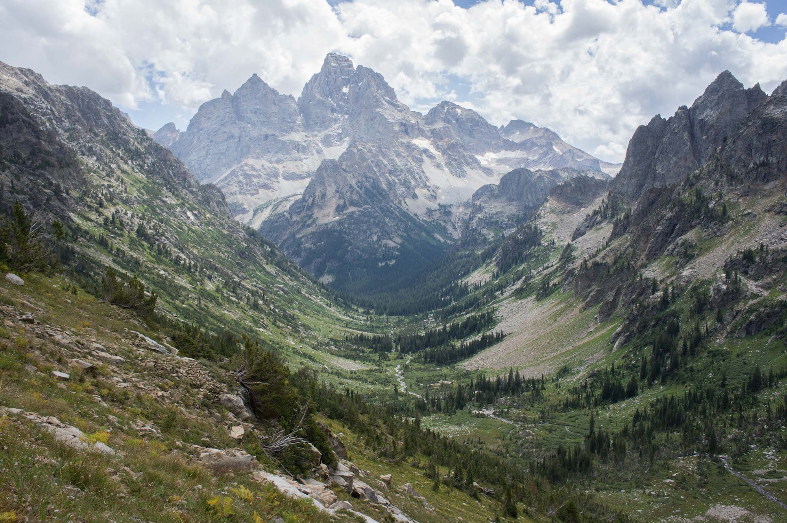

40˚ 46' 39.19" N
110˚ 22' 27.34" W
The Anaconda Opportunity.
An augustly trip through Utah, Wyoming & Montana

Thusly was the dealio,
Myself, Jonathan and Spencer spent two weeks hiking through some of the grandest locations in the world. We spent 3 days in the High Uintas Wilderness, 2 days in Grand Teton National Park in Wyoming, and then 6 days in Glacier National park, 5 nights of which would be spent in the backcountry. such walking. many altitude. Wow.
So first, as was the first place to where we went, we start in...
Utah
Our primary goal here was to climb Kings Peak. The general route for which you can see to the left. The route from Henry's Fork Trailhead consists of 30 miles, round trip, from 9440ft to 13,527ft; however, in contrast to previous summitings when I have done it 2 days or even once in 1 day (14hrs), we would take 3 days and 2 nights to adjust to altitude as well as take the requisite time to really enjoy this area.
Making our way south, at about 8 miles in we arrived to where we'd set up camp and go for some water where among the signs of sunset against the ridge in the photo to the right you can see Kings Peak sticking up behind the middle of the ridge to the right of the gap.
Day Two / eight miles in
Henry's Fork Basin - High Uintas Range, Utah / 40° 49' 55.59"N 110° 27' 19.48"W
We awoke, Jon constructed a fire over which we heated up some water for a quick breakfast of typical backcountry fare requiring re-un-dehydration(?), and we set off for the peak which was yet 7 miles away, yet whereas now we were at 10,700ft from 9,400 yesterday, it would prove to be more of a challenge than yesterday going the rest of the way up to 13,527.
Gunsight Pass / eleven miles in
The altitude was getting thin. Gunsight pass is just under 12,000ft, and there are two options for getting to the peak. Traverse the ridge; requireing a fair bit of scrambling, some climbing, and good balance, or descending east into painter basin to then circle around and turn back west and ascend again arriving right at the foot of the peak. We opted for the decent into the basin this time, but we would take the ridge cutoff on the way back.
These photos start to show some of the scale of the place. Above, you can see two dots on the edge of the enormous rock field which makes the unaccomodating floor of the basin just at the foot of Kings Peak. To the right, Jon and Spencer are starting the climb up from Anderson pass (12,800ft). It takes just an additional 45-55 minutes to get from the pass to the peak.
Kings Peak Summit / 15 miles & 13,527'
40° 46' 39.19"N 110° 22' 27.34"W
I'd made it to the summit before Jon and Spencer, and I had the peak to myself for about 30 minutes. I only attribute this to my having been aclimated; whereas, they of outstanding and better shape than I had come straight from the California coast and were still adjusting to the thin air.
Day 3 / Back to the car with 30 miles total
We got back to camp for one more night. Spencer had long since passed out, while Jon and I stayed up late by the fire eating food and talking into the night. In the morning, we would get up, hike the remaining 6 or 7 miles back to the car, load up again and head for our next stop..
Wyoming
Grand Teton National Park
Driving north back into Wyoming from the Uintas range, we drove an additional 5 hours along Wyoming & U.S. Highways 89 which snakes the state and borders so took us from one state to the next. Out of Wyoming and back into Utah, Back into Wyoming, then into Idaho, then finally back into Wyoming as we got close to and eventually arrived in Jackson, Wyoming and Grand Teton National Park.

We had arrived in time to secure a campsite at Coulter Bay campground, and it wasn't too long until something happened.. something for which Spencer got his embarrasigly apt nickname "3-Alarm." He earned his new moniker by trying to cheat the system. Cheating the system of propane canisters and stoves, something of which the often quoted Hank Hill would greatly disapprove, yet such character's fictional existence rendered his wise words unheard as spencer lit a stove with another already lit stove. This caused the one he was holding to erupt into a maltov of impending doom, so he tossed it into the middle of the gravel street, and luckily it eventually burned itself out and was disposed of, but not before park law enforcement and fire crews arrived and Jon's and my faces had buried themselves firmly in our palms.

Paintbrush Divide Loop / 19 miles & 6,400 - 10,700'
40° 46' 39.19"N 110° 22' 27.34"W
With yesterday's fiasco behind us, Spencer decided to rest up some more from Kings Peak and spend the day with the flat landers to get some important things squared away for uni coming up. So Jon and I took off for an 8 or so hour hike into the realm of the craggly peaks, flowing streams, likely snow field traverses, probable moose and possible bear.


Into Cascade Canyon / 8 miles & 10,700'
40° 46' 39.19"N 110° 22' 27.34"W
We made our way up Paintbrush Canyon and were now cresting over into Cascade Canyon which to me, holds the best views on earth.

We had arrived in time to secure a campsite at Coulter Bay campground, and it wasn't too long until something happened.. something for


Montana
Glacier National Park
Driving north back into Wyoming from the Uintas range, we drove an additional 5 hours along Wyoming & U.S. Highways 89 which snakes the state and borders so took us from one state to the next. Out of Wyoming and back into Utah, Back into Wyoming, then into Idaho, then finally back into Wyoming as we got close to and eventually arrived in Jackson, Wyoming and Grand Teton National Park.